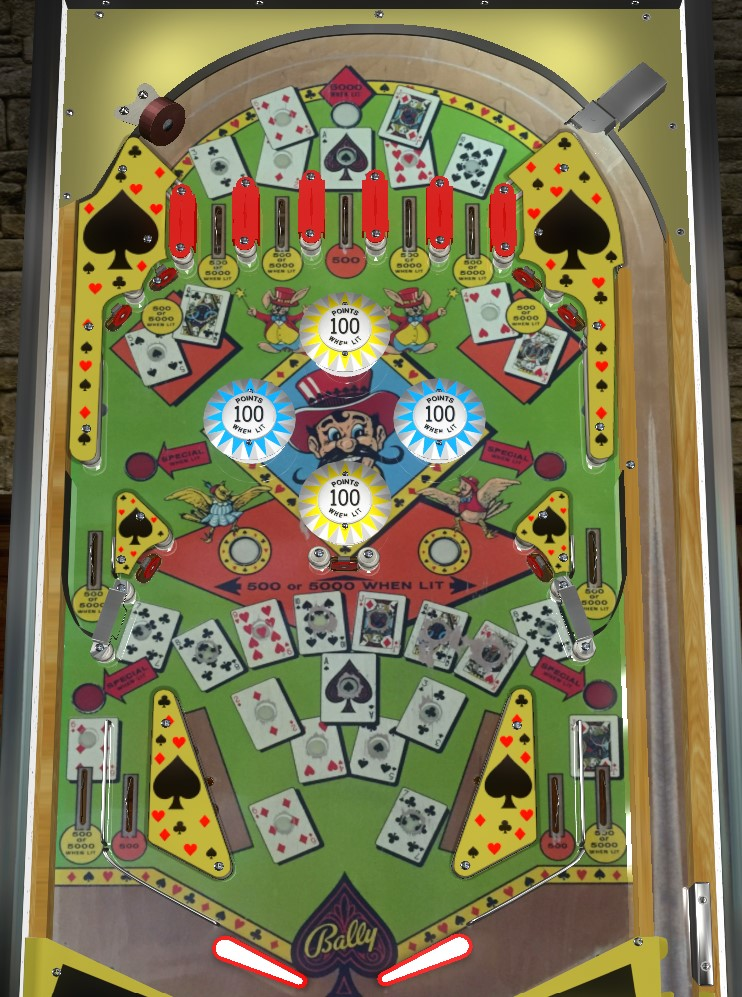

Not to be confused with Hi-Lo (Gottlieb, 1969).
Scoring on Hi-Lo Ace is rather finite unless you have enough control over the skill shot to reliably plunge specific top lanes, since all 5 top lanes have a playing card that can't be collected anywhere else on the game. Rollovers and standup targets with playing cards next to them score 5,000 points when lit, or 500 after their playing card has been collected. Completing Ace through 7 or 8 through Ace lights the top lanes and middle playfield standup targets for 5,000 for the rest of the game, and also lights the side lanes (8-Ace) or out lanes (Ace-7) for special- notice that the Ace is needed in both sequences, since it is both Hi and Lo. Be aware of the return feeds out of the upper side lanes.
The main goal of Hi-Lo Ace is to collect playing cards. Playing card targets score 5,000 points when lit (i.e. the card has not been collected yet), or 500 when not lit. Most cards can only be collected in one place, and five different cards can only be collected from the top lanes:
The Ace is the most important card, so be sure to collect it with a plunge as soon as possible. In fact, there is no way to reliably return to the top of the table (barring extreme pop bumper luck) to pick up more than one top lane per ball, so it's important to plunge any lane that still has lit cards, with even further emphasis on the Ace.
The object of the game is to complete one of two sequences: either Ace-2-3-4-5-6-7, or 8-9-10-Jack-Queen-King-Ace. Notice that Ace is part of both sequences. Completing either sequence lights the top lanes to score 5,000 points regardless of whether the lane is lit for a card or not, and also increases the value of the three standup targets across the middle of the game from 500 points to 5,000. If Ace through 7 is the completed sequence, the out lanes will be lit alternately for special; if 8 through Ace is completed, the upper side lanes will be lit alternately for special.
Specials alternate with any 10-point switch hit. If all 13 cards have been collected, both a side lane and an out lane will be lit for special; the two lit specials will be on the same side of the game. Special can score a free game, an extra ball, or 5,000 points. If Special is set to free game or extra ball, going through a lit Special lane scores 0 points. Once Special is lit, it stays lit for the rest of the game. Since Hi-Lo Ace is convertible to add-a-ball and counts down the number of balls remaining rather than counting up the current ball number, multiple extra balls can be earned on the same ball in play, unlike many other electromechanical games.
The top and bottom bumpers are yellow. The left and right bumpers are blue. Only one colour of bumpers is ever lit at a time. Lit bumpers score 100 points, while unlit bumpers score 10. Any switch that scores 500 or 5,000 points anywhere in the game will alternate which colour of bumpers are lit.
Hi-Lo Ace has a conventional in/out lane setup. In lanes score 500 points. Out lanes correspond to the 6 card (left) or Jack card (right) and score 5,000 points if the card is lit, or 500 after it has been collected.
There is no end of ball bonus in any capacity. Tilt penalty is only the ball in play, so there is no penalty to tilting to try to save a ball other than not being able to score any more points with the current ball.